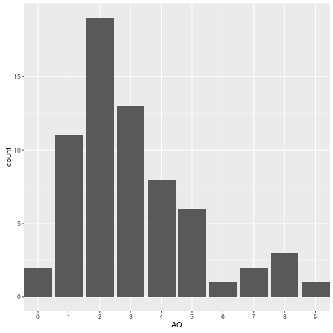

<?xml version="1.0" encoding="utf-8"?>
<!DOCTYPE html PUBLIC "-//W3C//DTD XHTML 1.0 Strict//EN"
"http://www.w3.org/TR/xhtml1/DTD/xhtml1-strict.dtd">
<html xmlns="http://www.w3.org/1999/xhtml" lang="en" xml:lang="en">
<head>
<!-- 2018-03-07 Wed 10:34 -->
<meta http-equiv="Content-Type" content="text/html;charset=utf-8" />
<meta name="viewport" content="width=device-width, initial-scale=1" />
<title>Answer to Exercise: Scoring the AQ</title>
<meta name="generator" content="Org mode" />
<meta name="author" content="Dale Barr" />
<style type="text/css">
 <!--/*--><![CDATA[/*><!--*/
  .title  { text-align: center;
             margin-bottom: .2em; }
  .subtitle { text-align: center;
              font-size: medium;
              font-weight: bold;
              margin-top:0; }
  .todo   { font-family: monospace; color: red; }
  .done   { font-family: monospace; color: green; }
  .priority { font-family: monospace; color: orange; }
  .tag    { background-color: #eee; font-family: monospace;
            padding: 2px; font-size: 80%; font-weight: normal; }
  .timestamp { color: #bebebe; }
  .timestamp-kwd { color: #5f9ea0; }
  .org-right  { margin-left: auto; margin-right: 0px;  text-align: right; }
  .org-left   { margin-left: 0px;  margin-right: auto; text-align: left; }
  .org-center { margin-left: auto; margin-right: auto; text-align: center; }
  .underline { text-decoration: underline; }
  #postamble p, #preamble p { font-size: 90%; margin: .2em; }
  p.verse { margin-left: 3%; }
  pre {
    border: 1px solid #ccc;
    box-shadow: 3px 3px 3px #eee;
    padding: 8pt;
    font-family: monospace;
    overflow: auto;
    margin: 1.2em;
  }
  pre.src {
    position: relative;
    overflow: visible;
    padding-top: 1.2em;
  }
  pre.src:before {
    display: none;
    position: absolute;
    background-color: white;
    top: -10px;
    right: 10px;
    padding: 3px;
    border: 1px solid black;
  }
  pre.src:hover:before { display: inline;}
  /* Languages per Org manual */
  pre.src-asymptote:before { content: 'Asymptote'; }
  pre.src-awk:before { content: 'Awk'; }
  pre.src-C:before { content: 'C'; }
  /* pre.src-C++ doesn't work in CSS */
  pre.src-clojure:before { content: 'Clojure'; }
  pre.src-css:before { content: 'CSS'; }
  pre.src-D:before { content: 'D'; }
  pre.src-ditaa:before { content: 'ditaa'; }
  pre.src-dot:before { content: 'Graphviz'; }
  pre.src-calc:before { content: 'Emacs Calc'; }
  pre.src-emacs-lisp:before { content: 'Emacs Lisp'; }
  pre.src-fortran:before { content: 'Fortran'; }
  pre.src-gnuplot:before { content: 'gnuplot'; }
  pre.src-haskell:before { content: 'Haskell'; }
  pre.src-hledger:before { content: 'hledger'; }
  pre.src-java:before { content: 'Java'; }
  pre.src-js:before { content: 'Javascript'; }
  pre.src-latex:before { content: 'LaTeX'; }
  pre.src-ledger:before { content: 'Ledger'; }
  pre.src-lisp:before { content: 'Lisp'; }
  pre.src-lilypond:before { content: 'Lilypond'; }
  pre.src-lua:before { content: 'Lua'; }
  pre.src-matlab:before { content: 'MATLAB'; }
  pre.src-mscgen:before { content: 'Mscgen'; }
  pre.src-ocaml:before { content: 'Objective Caml'; }
  pre.src-octave:before { content: 'Octave'; }
  pre.src-org:before { content: 'Org mode'; }
  pre.src-oz:before { content: 'OZ'; }
  pre.src-plantuml:before { content: 'Plantuml'; }
  pre.src-processing:before { content: 'Processing.js'; }
  pre.src-python:before { content: 'Python'; }
  pre.src-R:before { content: 'R'; }
  pre.src-ruby:before { content: 'Ruby'; }
  pre.src-sass:before { content: 'Sass'; }
  pre.src-scheme:before { content: 'Scheme'; }
  pre.src-screen:before { content: 'Gnu Screen'; }
  pre.src-sed:before { content: 'Sed'; }
  pre.src-sh:before { content: 'shell'; }
  pre.src-sql:before { content: 'SQL'; }
  pre.src-sqlite:before { content: 'SQLite'; }
  /* additional languages in org.el's org-babel-load-languages alist */
  pre.src-forth:before { content: 'Forth'; }
  pre.src-io:before { content: 'IO'; }
  pre.src-J:before { content: 'J'; }
  pre.src-makefile:before { content: 'Makefile'; }
  pre.src-maxima:before { content: 'Maxima'; }
  pre.src-perl:before { content: 'Perl'; }
  pre.src-picolisp:before { content: 'Pico Lisp'; }
  pre.src-scala:before { content: 'Scala'; }
  pre.src-shell:before { content: 'Shell Script'; }
  pre.src-ebnf2ps:before { content: 'ebfn2ps'; }
  /* additional language identifiers per "defun org-babel-execute"
       in ob-*.el */
  pre.src-cpp:before  { content: 'C++'; }
  pre.src-abc:before  { content: 'ABC'; }
  pre.src-coq:before  { content: 'Coq'; }
  pre.src-groovy:before  { content: 'Groovy'; }
  /* additional language identifiers from org-babel-shell-names in
     ob-shell.el: ob-shell is the only babel language using a lambda to put
     the execution function name together. */
  pre.src-bash:before  { content: 'bash'; }
  pre.src-csh:before  { content: 'csh'; }
  pre.src-ash:before  { content: 'ash'; }
  pre.src-dash:before  { content: 'dash'; }
  pre.src-ksh:before  { content: 'ksh'; }
  pre.src-mksh:before  { content: 'mksh'; }
  pre.src-posh:before  { content: 'posh'; }
  /* Additional Emacs modes also supported by the LaTeX listings package */
  pre.src-ada:before { content: 'Ada'; }
  pre.src-asm:before { content: 'Assembler'; }
  pre.src-caml:before { content: 'Caml'; }
  pre.src-delphi:before { content: 'Delphi'; }
  pre.src-html:before { content: 'HTML'; }
  pre.src-idl:before { content: 'IDL'; }
  pre.src-mercury:before { content: 'Mercury'; }
  pre.src-metapost:before { content: 'MetaPost'; }
  pre.src-modula-2:before { content: 'Modula-2'; }
  pre.src-pascal:before { content: 'Pascal'; }
  pre.src-ps:before { content: 'PostScript'; }
  pre.src-prolog:before { content: 'Prolog'; }
  pre.src-simula:before { content: 'Simula'; }
  pre.src-tcl:before { content: 'tcl'; }
  pre.src-tex:before { content: 'TeX'; }
  pre.src-plain-tex:before { content: 'Plain TeX'; }
  pre.src-verilog:before { content: 'Verilog'; }
  pre.src-vhdl:before { content: 'VHDL'; }
  pre.src-xml:before { content: 'XML'; }
  pre.src-nxml:before { content: 'XML'; }
  /* add a generic configuration mode; LaTeX export needs an additional
     (add-to-list 'org-latex-listings-langs '(conf " ")) in .emacs */
  pre.src-conf:before { content: 'Configuration File'; }

  table { border-collapse:collapse; }
  caption.t-above { caption-side: top; }
  caption.t-bottom { caption-side: bottom; }
  td, th { vertical-align:top;  }
  th.org-right  { text-align: center;  }
  th.org-left   { text-align: center;   }
  th.org-center { text-align: center; }
  td.org-right  { text-align: right;  }
  td.org-left   { text-align: left;   }
  td.org-center { text-align: center; }
  dt { font-weight: bold; }
  .footpara { display: inline; }
  .footdef  { margin-bottom: 1em; }
  .figure { padding: 1em; }
  .figure p { text-align: center; }
  .inlinetask {
    padding: 10px;
    border: 2px solid gray;
    margin: 10px;
    background: #ffffcc;
  }
  #org-div-home-and-up
   { text-align: right; font-size: 70%; white-space: nowrap; }
  textarea { overflow-x: auto; }
  .linenr { font-size: smaller }
  .code-highlighted { background-color: #ffff00; }
  .org-info-js_info-navigation { border-style: none; }
  #org-info-js_console-label
    { font-size: 10px; font-weight: bold; white-space: nowrap; }
  .org-info-js_search-highlight
    { background-color: #ffff00; color: #000000; font-weight: bold; }
  .org-svg { width: 90%; }
  /*]]>*/-->
</style>
<link rel="stylesheet" type="text/css" href="../../css/my_css.css" />
<script type="text/javascript">
/*
@licstart  The following is the entire license notice for the
JavaScript code in this tag.

Copyright (C) 2012-2017 Free Software Foundation, Inc.

The JavaScript code in this tag is free software: you can
redistribute it and/or modify it under the terms of the GNU
General Public License (GNU GPL) as published by the Free Software
Foundation, either version 3 of the License, or (at your option)
any later version.  The code is distributed WITHOUT ANY WARRANTY;
without even the implied warranty of MERCHANTABILITY or FITNESS
FOR A PARTICULAR PURPOSE.  See the GNU GPL for more details.

As additional permission under GNU GPL version 3 section 7, you
may distribute non-source (e.g., minimized or compacted) forms of
that code without the copy of the GNU GPL normally required by
section 4, provided you include this license notice and a URL
through which recipients can access the Corresponding Source.


@licend  The above is the entire license notice
for the JavaScript code in this tag.
*/
<!--/*--><![CDATA[/*><!--*/
 function CodeHighlightOn(elem, id)
 {
   var target = document.getElementById(id);
   if(null != target) {
     elem.cacheClassElem = elem.className;
     elem.cacheClassTarget = target.className;
     target.className = "code-highlighted";
     elem.className   = "code-highlighted";
   }
 }
 function CodeHighlightOff(elem, id)
 {
   var target = document.getElementById(id);
   if(elem.cacheClassElem)
     elem.className = elem.cacheClassElem;
   if(elem.cacheClassTarget)
     target.className = elem.cacheClassTarget;
 }
/*]]>*///-->
</script>
</head>
<body>
<div id="org-div-home-and-up">
 <a accesskey="h" href="../index.html"> UP </a>
 |
 <a accesskey="H" href="../../index.html"> HOME </a>
</div><div id="content">
<h1 class="title">Answer to Exercise: Scoring the AQ</h1>
<p>
The final script containing a model answer can be downloaded <a href="score_AQ.R">here</a>.  (Other solutions are possible.)
</p>

<p>
First, load in the packages we will need for data processing and visualization.
</p>

<div class="org-src-container">
<pre><code class="src src-R"><span style="color: #008b8b;">library</span>(<span style="color: #8b2252;">"dplyr"</span>)
<span style="color: #008b8b;">library</span>(<span style="color: #8b2252;">"tidyr"</span>)
<span style="color: #008b8b;">library</span>(<span style="color: #8b2252;">"ggplot2"</span>)
</code></pre>
</div>

<p>
Now load in the data itself.
</p>

<div class="org-src-container">
<pre><code class="src src-R"><span style="color: #b22222;">## </span><span style="color: #b22222;">read in the data</span>
dat <span style="color: #008b8b;">&lt;-</span> read.csv(<span style="color: #8b2252;">"sm_data.csv"</span>, skip = 1, stringsAsFactors = <span style="color: #228b22;">FALSE</span>)
</code></pre>
</div>

<p>
Note that we have used the argument &ldquo;<code>skip = 1</code>&rdquo; because for some reason, Survey Monkey left the first line blank.  Let&rsquo;s have a <code>glimpse()</code>:
</p>

<div class="org-src-container">
<pre><code class="src src-R">glimpse(dat)
</code></pre>
</div>

<pre class="example">
list()

</pre>

<p>
We will pull out the participant information into a separate table called <code>part_info</code>.
</p>

<div class="org-src-container">
<pre><code class="src src-R"><span style="color: #b22222;">## </span><span style="color: #b22222;">pull out participant information</span>
part_info <span style="color: #008b8b;">&lt;-</span> dat <span style="color: #008b8b;">%&gt;%</span>
    select(Id, Gender, Age, Participate)
</code></pre>
</div>

<pre class="example">
Error in select.list(., Id, Gender, Age, Participate) : 
  object 'Age' not found

</pre>

<p>
Now let&rsquo;s reshape the question data (columns Q1 to Q10) from wide to
long, and store this in the variable <code>qdat</code>.
</p>

<div class="org-src-container">
<pre><code class="src src-R">qdat <span style="color: #008b8b;">&lt;-</span> dat <span style="color: #008b8b;">%&gt;%</span>
    select(Id, Q1:Q10) <span style="color: #008b8b;">%&gt;%</span>
    gather(Question, Response, Q1:Q10) <span style="color: #008b8b;">%&gt;%</span>
    arrange(Id, Question)
</code></pre>
</div>

<p>
Now let&rsquo;s create our tables that link responses to scores for the two different formats.  We will type the data directly into a <code>data_frame</code> object.  (The <code>data_frame()</code> function is a <code>dplyr</code> way of creating a particular kind of data frame.  It operates similarly to the base <code>data.frame()</code> function, but has more sensible defaults, e.g., <code>stringsAsFactors = FALSE</code>.)
</p>

<div class="org-src-container">
<pre><code class="src src-R"><span style="color: #b22222;">## </span><span style="color: #b22222;">table link format to response score</span>
rscores <span style="color: #008b8b;">&lt;-</span> data_frame(Format = rep(1:2, each = 4),
                      Response = rep(c(<span style="color: #8b2252;">"Definitely Agree"</span>, <span style="color: #8b2252;">"Slightly Agree"</span>,
                          <span style="color: #8b2252;">"Slightly Disagree"</span>, <span style="color: #8b2252;">"Definitely Disagree"</span>),
                          times = 2),
                      Score=c(1, 1, 0, 0,
                          0, 0, 1, 1))
</code></pre>
</div>

<p>
Let&rsquo;s have a look:
</p>

<div class="org-src-container">
<pre><code class="src src-R">rscores
</code></pre>
</div>

<pre class="example">
# A tibble: 8 x 3
  Format Response            Score
   &lt;int&gt; &lt;chr&gt;               &lt;dbl&gt;
1      1 Definitely Agree     1.00
2      1 Slightly Agree       1.00
3      1 Slightly Disagree    0   
4      1 Definitely Disagree  0   
5      2 Definitely Agree     0   
6      2 Slightly Agree       0   
7      2 Slightly Disagree    1.00
8      2 Definitely Disagree  1.00
</pre>

<p>
Now let&rsquo;s make a table linking each question to format number (1 or 2).
</p>

<div class="org-src-container">
<pre><code class="src src-R"><span style="color: #b22222;">## </span><span style="color: #b22222;">table linking question to format</span>
qformats <span style="color: #008b8b;">&lt;-</span> data_frame(Question = paste0(<span style="color: #8b2252;">"Q"</span>, 1:10),
                       Format = c(1, 2, 2, 2, 2, 2,
                           1, 1, 2, 1))
</code></pre>
</div>

<p>
Let&rsquo;s have a look at this.
</p>

<div class="org-src-container">
<pre><code class="src src-R">qformats
</code></pre>
</div>

<pre class="example">
# A tibble: 10 x 2
   Question Format
   &lt;chr&gt;     &lt;dbl&gt;
 1 Q1         1.00
 2 Q2         2.00
 3 Q3         2.00
 4 Q4         2.00
 5 Q5         2.00
 6 Q6         2.00
 7 Q7         1.00
 8 Q8         1.00
 9 Q9         2.00
10 Q10        1.00
</pre>

<p>
OK, now we&rsquo;re ready to score each individual question by linking <code>qdat</code> to <code>rscores</code> by way of <code>qformats</code>.
</p>

<div class="org-src-container">
<pre><code class="src src-R">scored <span style="color: #008b8b;">&lt;-</span> qdat <span style="color: #008b8b;">%&gt;%</span>
    inner_join(qformats, <span style="color: #8b2252;">"Question"</span>) <span style="color: #008b8b;">%&gt;%</span>
    inner_join(rscores, c(<span style="color: #8b2252;">"Format"</span>, <span style="color: #8b2252;">"Response"</span>))
</code></pre>
</div>

<pre class="example">
Error in eval(lhs, parent, parent) : object 'qdat' not found

</pre>

<p>
This warning message arises in the joining of <code>qdat</code> to <code>qformats</code>.  It occurs because in creating <code>qdat</code>, <code>gather()</code> defined the variable <code>Question</code> as type <code>factor</code> instead of <code>character</code>, whereas we defined this same variable as type <code>character</code> when we created the data frame <code>qformats</code>.  The message alerts us to the fact that before performing the join, the function converted <code>Question</code> in table <code>qdat</code> to a <code>character</code> vector.  If we wanted to avoid this message, we could perform the conversion manually ourselves just before the first call to <code>inner_join()</code>.  (The benefit of doing this that other potential users of our script won&rsquo;t see a warning message that they might not understand and that might therefore cause them to freak out.)
</p>

<div class="org-src-container">
<pre><code class="src src-R">scored <span style="color: #008b8b;">&lt;-</span> qdat <span style="color: #008b8b;">%&gt;%</span>
    mutate(Question = as.character(Question)) <span style="color: #008b8b;">%&gt;%</span>
    inner_join(qformats, <span style="color: #8b2252;">"Question"</span>) <span style="color: #008b8b;">%&gt;%</span>
    inner_join(rscores, c(<span style="color: #8b2252;">"Format"</span>, <span style="color: #8b2252;">"Response"</span>))
</code></pre>
</div>

<p>
If everything goes correctly, we should have the same number of rows in <code>scored</code> as we had in <code>qdat</code>.  The next line is just to formally test that this is the case, using <code>stopifnot()</code>.  This will cause the program to halt if the condition is not satisfied.
</p>

<div class="org-src-container">
<pre><code class="src src-R">stopifnot(nrow(scored) == nrow(qdat))
</code></pre>
</div>

<pre class="example">
Error in nrow(scored) : object 'scored' not found

</pre>

<p>
The final thing to do is to calculate the AQ, which is the sum of the 1s for each <code>Id</code> (because each unique value of <code>Id</code> stands in for a unique participant).  For that we will use <code>group_by(Id) %&gt;% summarise(AQ = sum(Score))</code>, and pipe the result into arrange, so the participants with the highest AQ scores show up at the top.  The final result gets stored in <code>AQ_scores</code>.
</p>

<div class="org-src-container">
<pre><code class="src src-R">AQ_scores <span style="color: #008b8b;">&lt;-</span> scored <span style="color: #008b8b;">%&gt;%</span>
    group_by(Id) <span style="color: #008b8b;">%&gt;%</span>
    summarise(AQ = sum(Score)) <span style="color: #008b8b;">%&gt;%</span>
    arrange(desc(AQ))
</code></pre>
</div>

<pre class="example">
Error in eval(lhs, parent, parent) : object 'scored' not found

</pre>

<div class="org-src-container">
<pre><code class="src src-R">head(AQ_scores)
</code></pre>
</div>

<pre class="example">
Error in head(AQ_scores) : object 'AQ_scores' not found

</pre>

<p>
Our last task was to generate a histogram using <code>ggplot2</code>.
</p>

<div class="org-src-container">
<pre><code class="src src-R">ggplot(AQ_scores, aes(AQ)) + geom_bar() + scale_x_discrete(limits = 0:10)
</code></pre>
</div>


<div class="figure">
<p>
</p>
</div>

<p>
We probably want to link the AQ scores back to participant info (since, for example, we&rsquo;d want to contact participants with particularly high AQs).
</p>

<div class="org-src-container">
<pre><code class="src src-R">part_AQ <span style="color: #008b8b;">&lt;-</span> inner_join(AQ_scores, part_info, <span style="color: #8b2252;">"Id"</span>) 
</code></pre>
</div>

<div class="org-src-container">
<pre><code class="src src-R">head(part_AQ, 10)
</code></pre>
</div>

<pre class="example">
Error in head(part_AQ, 10) : object 'part_AQ' not found

</pre>
</div>
<div id="postamble" class="status">
<p class="date">Date: R Training</p>
<p class="author">Author: Dale Barr</p>
<p class="date">Created: 2018-03-07 Wed 10:34</p>
<p class="validation"><a href="http://validator.w3.org/check?uri=referer">Validate</a></p>
</div>
</body>
</html>
